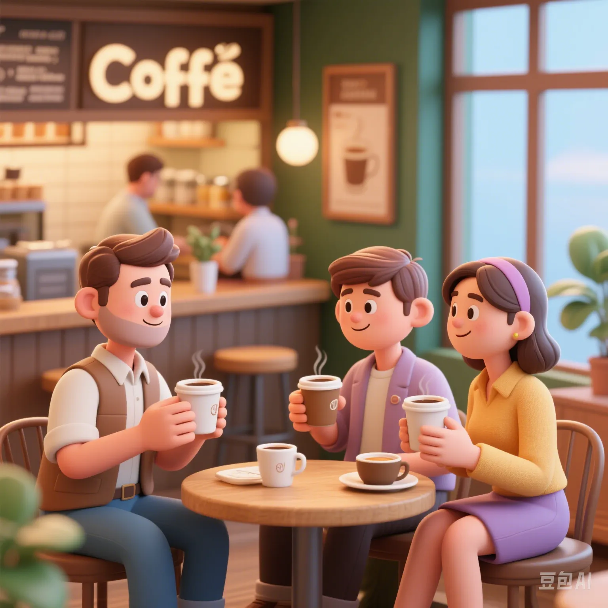

Global Coffee Consumption Big Data: Which Country Drinks the Most and Who Drinks the Most Expensive?
PeaceLove.Top Insights :2025-04-17
☕ Global coffee consumption rankings: Who is the 'coffee kingdom'?
| Country/Region | Average annual coffee consumption (per person per year) | Coffee consumption culture ranking | Proportion of high - end coffee consumption |
|---|---|---|---|
| Finland | 12.3 kg | Rank 1 | 58% |
| Norway | 10.0 kg | Rank 2 | 52% |
| Netherlands | 8.4 kg | Rank 3 | 46% |
| Sweden | 8.0 kg | Rank 4 | 44% |
| USA | 4.0 kg | Rank 10 | 32% |
Finns drink the most coffee: at least four cups a day, and coffee has become a daily necessity. The United States ranks among the lowest: although the global coffee consumption is huge, the consumption of high - end coffee is relatively small.
💰 Who is drinking the most expensive coffee?
| Country/Region | Average price of high - end coffee (USD/cup) | Global ranking | Consumption trend of high - end coffee brands |
|---|---|---|---|
| Switzerland | 7.2 | Rank 1 | More independent specialty coffee shops |
| Norway | 6.9 | Rank 2 | Popularity of single - origin coffee culture |
| Japan | 6.5 | Rank 3 | Tendency towards refined coffee shops |
| USA | 5.2 | Rank 4 | Dominance of Starbucks |
| France | 5.0 | Rank 5 | More轻奢 coffee |
Swiss coffee is expensive for a reason: high - quality coffee, hand - ground, and a specialty experience. Chain brands like Starbucks in the United States have popularized high - end coffee, but the prices are relatively lower.
🌍 Key trends: 'Three major changes' in global coffee consumption
1️⃣ The rise of single - origin coffee
More and more consumers are starting to prefer single - origin coffee (such as Colombian and Kenyan beans).
- 70% of consumers are willing to pay a higher price for high - quality single - origin coffee.
- Limited - edition festival coffees (such as autumn pumpkin - flavored coffee) have become the characteristic highlights of brands.
2️⃣ The popularity of take - away coffee
In countries like China and India, the demand for take - away coffee has increased sharply.
- The average annual growth rate of take - away coffee has reached 16%.
- Mobile coffee trucks and coffee vending machines have begun to be popular, and the convenient and fast drinking experience is well - received.
3️⃣ Environmentally friendly coffee
Consumers are paying more attention to environmental protection and choosing sustainably produced coffee.
- Nearly 40% of consumers choose to buy organic coffee or Fair Trade - certified coffee.
- Recyclable or biodegradable packaging has become the mainstream trend in the market.
🛒 Analysis of the global 'coffee culture': Coffee - drinking habits in different countries
| Country | Coffee - drinking time | Coffee - drinking method | Consumption motivation |
|---|---|---|---|
| Italy | Morning and afternoon | Espresso | Refreshment, socializing |
| France | Morning and afternoon tea time | French drip coffee | Relaxation, leisure |
| USA | After getting up in the morning and in the afternoon | American coffee, latte | Refreshment, convenience |
| Sweden | Morning and afternoon tea time | Filter coffee | Relaxation, socializing |
| Japan | Any time, common in the office | Espresso, iced coffee | Work, socializing |
📉 Current situation of global coffee consumption: The cooling coffee market
Although the global coffee market is still large, in recent years, coffee consumption in some developed countries has tended to be stable or slightly decreased.
| Country | Annual change in coffee consumption (%) | Reason |
|---|---|---|
| USA | - 2% | The younger generation prefers other beverages (such as milk tea) |
| UK | - 3% | The influence of the healthy - eating trend |
| Japan | - 1% | Diversification of young people's beverage choices |
| France | 0% | Stable coffee culture |
Consumers are changing from 'drinking coffee' to 'drinking beverages': the health trend and the diversification of beverage choices have affected coffee consumption.
🏆 Conclusion: Coffee is more than just a pick - me - up
Whether from the depth of culture, the level of consumption, or individual preferences, coffee has become more than just a refreshing beverage; it has become an expression of social interaction and a lifestyle. If you want to 'drink high - end' in 2025, why not choose a specialty coffee you've never tried before and feel the diverse charm of global coffee! 🌍☕️